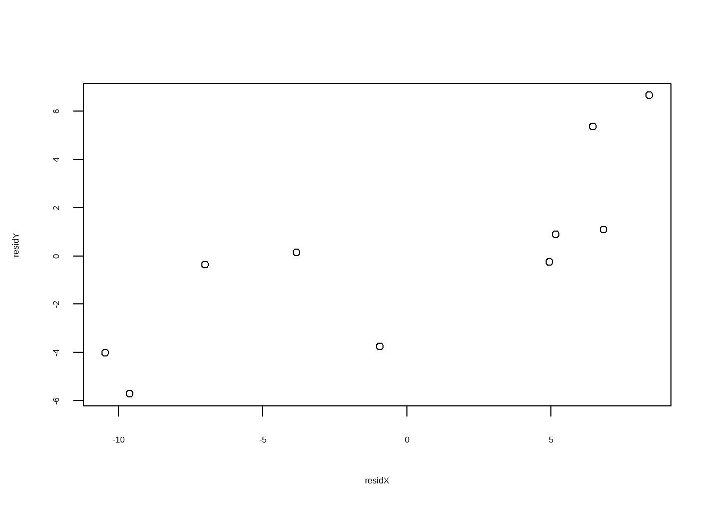
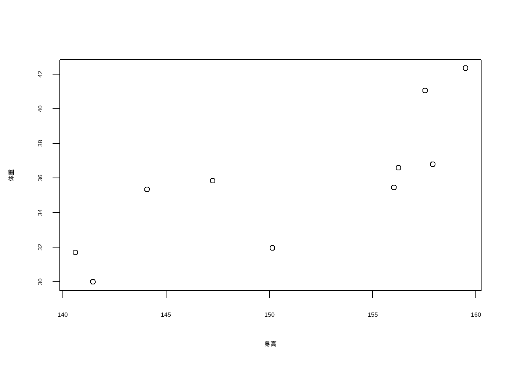

library(ppcor)
df <- haven::read_sav("datasets/data01.sav")
df1 <- df[,2:4]
names(df1) <- c("height","weight","vc")
head(df1)
## # A tibble: 6 × 3
## height weight vc
## <dbl> <dbl> <dbl>
## 1 139. 30.4 2
## 2 164. 46.2 2.75
## 3 156. 37.1 2.75
## 4 156. 35.5 2
## 5 150. 31 1.5
## 6 145 33 2.531 偏相关和典型相关分析
31.1 偏相关
偏相关分析（partial correlation）用于在剔除其他变量影响的前提下，分析两个变量之间的真实线性关系。它可以帮助我们揭示变量间被掩盖或夸大的“纯粹”关联。
偏相关分析可以使用R包ppcor实现。
首先是加载数据和R包。
这个数据有3列，现在我们要探索身高（height）和体重（weight）的关系，其中vc是需要控制的因素。
首先进行pearson偏相关分析：
p1 <- pcor(df1,method = "pearson")
p1
## $estimate
## height weight vc
## height 1.0000000 0.7941292 -0.2022408
## weight 0.7941292 1.0000000 0.6166786
## vc -0.2022408 0.6166786 1.0000000
##
## $p.value
## height weight vc
## height 0.0000000000 0.0000491115 0.406351395
## weight 0.0000491115 0.0000000000 0.004920346
## vc 0.4063513954 0.0049203462 0.000000000
##
## $statistic
## height weight vc
## height 0.0000000 5.387551 -0.8514549
## weight 5.3875507 0.000000 3.2299064
## vc -0.8514549 3.229906 0.0000000
##
## $n
## [1] 20
##
## $gp
## [1] 1
##
## $method
## [1] "pearson"结果中$estimate给出了偏相关系数，可以看到在控制了vc后，height和weight的偏相关系数是0.7941292；$p.value给出了相应的P值，$statistic给出了检验统计量。
上面演示的是pearson偏相关分析，下面展示一个spearman偏相关分析。
# 加载数据
df2 <- haven::read_sav("datasets/data02.sav")
names(df2) <- c("id","x","y","z")
head(df2)
## # A tibble: 6 × 4
## id x y z
## <dbl> <dbl+lbl> <dbl+lbl> <dbl>
## 1 7 1 [矮] 1 [轻] 1.25
## 2 17 1 [矮] 1 [轻] 1.25
## 3 1 1 [矮] 1 [轻] 2
## 4 11 1 [矮] 1 [轻] 2
## 5 5 2 [中] 1 [轻] 1.5
## 6 15 2 [中] 1 [轻] 1.5现在我们要计算x和y的相关性，z是要控制的因素，由于这两个变量是分类变量，所以要用spearman偏相关分析。
其实用法是一样的，就是改个参数而已：
pcor(df2[,-1],method = "spearman")
## $estimate
## x y z
## x 1.0000000 0.6985577 -0.4212568
## y 0.6985577 1.0000000 0.8486095
## z -0.4212568 0.8486095 1.0000000
##
## $p.value
## x y z
## x 0.0000000000 8.779998e-04 7.245901e-02
## y 0.0008779998 0.000000e+00 4.386687e-06
## z 0.0724590110 4.386687e-06 0.000000e+00
##
## $statistic
## x y z
## x 0.000000 4.025172 -1.915103
## y 4.025172 0.000000 6.613943
## z -1.915103 6.613943 0.000000
##
## $n
## [1] 20
##
## $gp
## [1] 1
##
## $method
## [1] "spearman"结果解读同上。
31.1.1 偏相关散点图
还是用df1的数据作为演示，现在是研究weight对height的影响，vc是需要控制的变量。
所以我们可以分别计算残差，用残差的散点图代表偏相关的散点图。
# 首先计算:height为因变量，vc是自变量 的残差
residX <- resid(lm(height~vc,data = df1))
# 再计算:weight为因变量，vc是自变量 的残差
residY <- resid(lm(weight~vc, data = df1))
# 两个残差的相关系数就是weight和height的偏相关系数！
cor(residX, residY, method = "pearson")
## [1] 0.7941292
# 画图即可
plot(residX, residY)
但是这个图的横纵坐标取值范围对实际来说是不能解释的，所以我们可以分别加上它们各自的平均值，然后再画散点图，方法借鉴了这篇文章：
residX1 <- residX + mean(df1$height)
residY1 <- residY + mean(df1$weight)
plot(residX1, residY1,xlab = "身高",ylab = "体重")
这个就是偏相关散点图了！
31.2 典型相关
在研究两个变量之间的相关关系时，双变量回归与相关引人了简单相关系数。在研究一个因变量与多个自变量之间的相互关系时，第十五章多元线性回归分析引人了复相关系数。
典型相关分析（Canonical Correlation）描述的是两组变量之间的相关关系。例如，某种药物的不同剂型、剂量、给药途径、给药时间等是一组变量，给药后人体各系统（如神经系统、循环系统、呼吸系统、消化系统等）所产生的作用为另一组变量。
典型相关分析借助主成分分析的思想，对两组变量分别寻找线性组合，使生成的新的综合变量能代表原始变量大部分的信息，且两组变量生成的新的两个综合变量的相关程度最大，这样新的综合变量成为第一对典型相关变量（类似于PCA中主成分的概念）。同样的方法可以找到第二对、第三对或者更多对的典型相关变量。利用各对综合变量之间的相关性更加全面地反映原来两组变量之间的整体相关性。
这个数据来自孙振球《医学统计学》第4版的例23-1，探讨小学生的生长发育指标（肺活量、身高、体重、胸围）和身体素质（短跑、跳高、跳远、实心球）的相互关系。
data23_1 <- read.csv("datasets/例23-1.csv",header = T)
psych::headtail(data23_1)
## Warning in psych::headtail(data23_1): headtail is deprecated. Please use the
## headTail function
## 肺活量 身高 体重 胸围 短跑 跳高 跳远 实心球
## 1 1210 120.1 23.8 61 10.2 66.3 2.01 2.73
## 2 1210 120.7 23.4 59.8 11.3 67.6 1.92 2.71
## 3 1040 121.2 22.9 59 10.1 66.5 1.92 2.6
## 4 1620 121.5 24.6 59.5 9.5 67.8 1.95 2.64
## ... ... ... ... ... ... ... ... ...
## 81 1310 129.7 24.7 61.7 10.1 69.4 2.03 2.8
## 82 2280 143.6 37.6 70 9.7 88.8 2.17 4.18
## 83 1580 136.6 32.3 67.2 10.3 87.1 2.66 4.04
## 84 2370 147.4 38.8 73 10.8 90.7 2.82 4.38典型相关分析R语言自带了cancor()函数，无需借助第三方R包：
# 先进行标准化
data23_1_scaled <- scale(data23_1)
# 前4个变量和后4个变量做相关性，直接提供2个数据框也可以
cc1 <- cancor(data23_1_scaled[,1:4],data23_1_scaled[,5:8])
cc1
## $cor
## [1] 0.8858445 0.2791523 0.1940486 0.0379654
##
## $xcoef
## [,1] [,2] [,3] [,4]
## 肺活量 -0.01450418 -0.05385333 -0.11225959 0.08182017
## 身高 -0.04785620 -0.05363288 0.13328851 0.04923374
## 体重 -0.01210233 -0.06297483 -0.05448421 -0.18211166
## 胸围 -0.05273621 0.15795275 0.01659891 0.06071731
##
## $ycoef
## [,1] [,2] [,3] [,4]
## 短跑 0.01512256 -0.05465158 0.04534369 -0.08765683
## 跳高 -0.07255867 -0.16577970 0.09806115 0.11046884
## 跳远 -0.00629539 0.20306724 0.05238581 -0.06560105
## 实心球 -0.03303627 -0.03755217 -0.14128874 -0.09174610
##
## $xcenter
## 肺活量 身高 体重 胸围
## 4.148467e-16 1.574365e-15 -1.685573e-16 8.725246e-16
##
## $ycenter
## 短跑 跳高 跳远 实心球
## -1.213067e-15 6.241132e-16 7.961761e-16 6.050881e-17$cor给出了两组数据之间的典型相关系数，比如第一个值0.8858445是第一对典型变量（即第一典型变量U1和V1）之间的相关系数，值为0.8858445，表明两组变量之间存在很强的线性关系。
$xcoef和$ycoef是两组变量的典型系数，这些是用于构建典型变量的线性组合系数，也称为典型载荷。它们定义了如何将原始变量组合成新的典型变量。
$xcoef(第一组变量的系数)：用于根据“肺活量、身高、体重、胸围”这四个原始变量，计算出第一组的典型变量U。例如，第一典型变量U1的计算公式为：
\[U1 = (-0.015)*肺活量 + (-0.048)*身高 + (-0.012)*体重 + (-0.053)*胸围\]
第一典型变量V1的计算公式为：
\[V1 = (0.015)*短跑 + (-0.073)*跳高 + (-0.006)*跳远 + (-0.033)*实心球\]
$xcenter和$ycenter是各组变量的均值。
下面进行典型相关的显著性检验，使用R包CCP实现。
library(CCP)
rho <- cc1$cor
n <- dim(data23_1_scaled[,1:4])[1]
p <- ncol(data23_1_scaled[,1:4])
q <- ncol(data23_1_scaled[,5:8])p.asym()函数实现典型相关的显著性检验。需要典型相关系数、观测个数、第一组的变量个数、第二组的变量个数。
# 4种典型相关的结果
p.asym(rho,n,p,q, tstat = "Wilks")
## Wilks' Lambda, using F-approximation (Rao's F):
## stat approx df1 df2 p.value
## 1 to 4: 0.1907537 10.4765088 16 232.8215 0.0000000
## 2 to 4: 0.8860745 1.0618303 9 187.5484 0.3930330
## 3 to 4: 0.9609581 0.7843615 4 156.0000 0.5369444
## 4 to 4: 0.9985586 0.1140327 1 79.0000 0.7364945
p.asym(rho,n,p,q, tstat = "Hotelling")
## Hotelling-Lawley Trace, using F-approximation:
## stat approx df1 df2 p.value
## 1 to 4: 3.770206950 17.5550261 16 298 0.0000000
## 2 to 4: 0.125083307 1.0632081 9 306 0.3898996
## 3 to 4: 0.040571670 0.7962190 4 314 0.5283457
## 4 to 4: 0.001443452 0.1161979 1 322 0.7334177
p.asym(rho,n,p,q, tstat = "Pillai")
## Pillai-Bartlett Trace, using F-approximation:
## stat approx df1 df2 p.value
## 1 to 4: 0.901742684 5.7482049 16 316 5.963363e-11
## 2 to 4: 0.117022206 1.0849404 9 324 3.733220e-01
## 3 to 4: 0.039096223 0.8192541 4 332 5.135803e-01
## 4 to 4: 0.001441371 0.1225607 1 340 7.264904e-01
p.asym(rho,n,p,q, tstat = "Roy")
## Roy's Largest Root, using F-approximation:
## stat approx df1 df2 p.value
## 1 to 1: 0.7847205 71.99119 4 79 0
##
## F statistic for Roy's Greatest Root is an upper bound.我们就看下Wilks结果，可以看到只有第一个典型相关系数是有意义的，后面3个都没有显著性。
stat：似然比approx：近似F值df1：分子自由度df2：分母自由度p.value：P值
结论：由典型相关变量可知，U1主要受身高和胸围的影响（典型系数较大），而V1则在跳高和实心球上的系数较大。这说明个子较为高大且胸围较大的男孩在跳高和实心球掷远这两个项目上的成绩较好。
至于在V1的线性表达式中Y1的系数符号为正，这意味着U1中的各变量与Y呈负相关（因为U1中各 变量的系数全为负），可以这样解释：由于Y1是50m跑所需时间（s），因此个子较为高大且胸围较大的男孩（倾向于腿较长、肺活量较大）50m跑所需时间较少，即跑得较快。